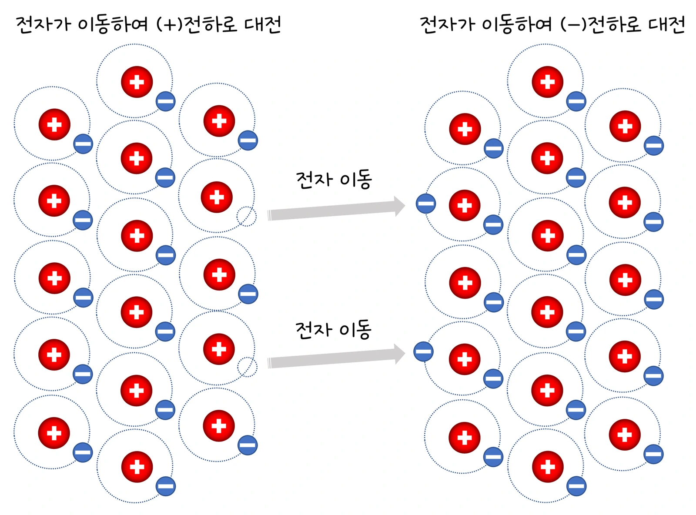
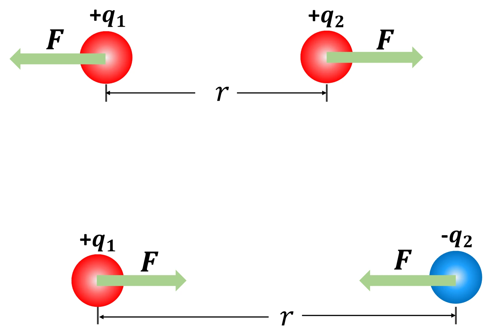

고2 물리학 · Ⅱ 전기와 자기 · 웹툰 7화 「머리카락이 서는 이유」
실험에서 두 금속판의 전압과 간격(4·6·8·10 cm)을 바꾸고 탐침을 (−)판에서 옮겨 가며 전위를 쟀습니다. 전위는 거리에 비례해 직선으로 올라갔고 기울기가 전기장 E = V ÷ d였으며, 같은 전압이라도 간격이 좁으면 전기장이 셌습니다. 균일한 전기장과 전위를 정리합니다.
실험 데이터 되짚기
전극 가장자리 효과 무시(균일한 전기장). x는 (−)판에서 탐침까지 거리입니다.
| 전압 V | 간격 d | 전기장 E | x = 2 cm | x = 4 cm | 전자가 받는 힘 eE |
|---|---|---|---|---|---|
| 6 V | 6 cm | 100 V/m | 2 V | 4 V | 1.6 × 10⁻¹⁷ N |
| 6 V | 3 cm | 200 V/m | 4 V | — | 3.2 × 10⁻¹⁷ N |
| 12 V | 6 cm | 200 V/m | 4 V | 8 V | 3.2 × 10⁻¹⁷ N |
| 12 V | 10 cm | 120 V/m | 2.4 V | 4.8 V | 1.9 × 10⁻¹⁷ N |
전위–거리 그래프는 원점을 지나는 직선이고 기울기가 E입니다. 등전위선은 같은 ΔV마다 같은 간격으로 판과 나란히 놓이고 전기력선과 수직입니다. 전자 하나가 받는 힘 = 전하량 × 전기장.
나란한 두 금속판에 전압 V를 걸면 판 사이에 균일한 전기장이 생깁니다: E = V ÷ d(단위 V/m = N/C). 전기장은 (+)판에서 (−)판으로 향하고, 전위는 (−)판에서 (+)판 쪽으로 거리에 비례해 직선으로 올라갑니다: V(x) = E·x. 전위가 같은 점을 이은 등전위선은 판과 나란하고 전기력선과 수직입니다. 전기장은 ‘전위가 거리에 따라 얼마나 급하게 변하는가’(V/m)이므로 같은 전압이라도 판 간격이 좁으면 전기장이 셉니다. 전하 q가 받는 힘 F = qE, 전위차 ΔV 구간을 지날 때 얻는 에너지 = qΔV(전위차 V = W/q).
움직여 보기
평행판 사이 — 전위는 직선으로 오르고, 전기장은 어디서나 같다
점선(등전위선)은 1 V마다 그렸습니다. 간격을 좁히면 선이 촘촘해지고 전기장 E가 세집니다 — 6 V·3 cm와 12 V·6 cm는 E가 같은 200 V/m. 빨간 화살표(전기력선)는 (+)판 → (−)판, 전자는 그 반대인 (+)판 쪽으로 힘을 받아 일정하게 가속합니다. 가장자리 효과 무시.
풍선을 머리에 문지르면 전자가 옮겨 가 서로 다른 전하를 띠고 끌어당깁니다. 두 전하 사이 전기력은 전하량의 곱에 비례하고 거리의 제곱에 반비례(쿨롱 법칙 F = kq₁q₂/r², k ≈ 9 × 10⁹) — 거리 2배면 힘 1/4. 전하는 주변 공간을 바꿔 놓아 다른 전하가 들어오면 힘을 받게 하는데 이것이 전기장입니다. 12 V, 간격 1 cm면 E = 1200 V/m; 구름–땅 사이 전위차는 수억 V. 전위차가 있는 두 곳을 도선으로 이으면 전하가 흐르고 1초 동안 지나는 전하량이 전류 I = q/t(2 A = 1초에 2 C).
교재 그림
문지르면 전자가 옮겨 간다 — 대전

풍선을 머리카락에 문지르면 원자핵(+)은 그대로 있고 전자(−)만 한쪽으로 옮겨 갑니다. 전자를 잃은 쪽(왼쪽, 빈 점선 동그라미)은 (+), 얻은 쪽(오른쪽)은 (−)로 대전되어 서로 끌어당깁니다.
교재 그림
같은 전하는 밀고, 다른 전하는 당긴다

두 전하가 서로에게 주는 힘 F는 크기가 같고 방향이 반대입니다. 크기는 F = kq₁q₂ ÷ r² — 거리 r가 2배가 되면 힘은 1/4입니다.
움직여 보기
거리를 2배로 — 전기력은 1/2일까, 1/4일까 (웹툰 7화)
거리를 0.1 m → 0.2 m(2배)로 늘려 보세요. 힘은 1/2이 아니라 1/4, 3배면 1/9입니다. 같은 부호는 밀고(척력), 다른 부호는 당깁니다(인력) — 두 전하가 받는 힘은 크기가 같고 방향이 반대입니다. (q₁ = q₂ = 1 μC, k = 9 × 10⁹ N·m²/C²)
전극 가장자리 효과를 무시했습니다. 실제 전도성 종이 실험에서는 전극 끝 근처와 종이 가장자리에서 등전위선이 휘고, 종이의 저항이 고르지 않으면 전위가 직선에서 조금 벗어납니다. 전도성 종이에는 전류가 흐르므로 엄밀히는 정전기장이 아니라 정상 전류의 전위 분포이지만 라플라스 방정식이 같아 등전위선 모양은 같습니다. 축전기·터치스크린·잉크젯 프린터의 잉크 방울 조종은 평행판 전기장을 이용하고, 번개는 구름–땅 사이 전기장이 공기의 절연 한계(약 3 × 10⁶ V/m)를 넘을 때 일어납니다.
V/m = N/C · e = 1.6 × 10⁻¹⁹ C · 등전위선 ⊥ 전기력선 · k ≈ 9 × 10⁹ N·m²/C²
“1화의 위치 에너지를 떠올려 봐. 전기장 안에서 전하를 옮기려면 일을 해야 하고, 그 일이 전기적 위치 에너지로 저장돼. 전하 1 C당 에너지 차이가 전위차야. 12 V, 간격 0.01 m → 판 사이 전기장 E = 12 ÷ 0.01 = 1200 V/m.”
웹툰 7화 · 뭉치: “전하가 직접 손을 뻗는 게 아니라, 공간이 먼저 변해 있는 거구나.”
“7라운드! 두 전하 사이 거리를 2배로 늘리면 전기력은? 난 1/4.” “거리가 2배니까 힘은 절반, 1/2!” … “거리 제곱이라서 1/4이구나. 1화 크레인은 거리에 비례했는데, 이건 반비례에 제곱까지.”
웹툰 7화 · 힘 센서 수치가 1/4로 — 제로 3 : 4 뭉치
E = 9 ÷ 0.045 = 200 V/m. V(3 cm) = 200 × 0.03 = 6 V.
qΔV = 1.6 × 10⁻¹⁹ × 12 = 1.9 × 10⁻¹⁸ J = 12 eV. 전자볼트(eV)는 이렇게 정의된 에너지 단위입니다.